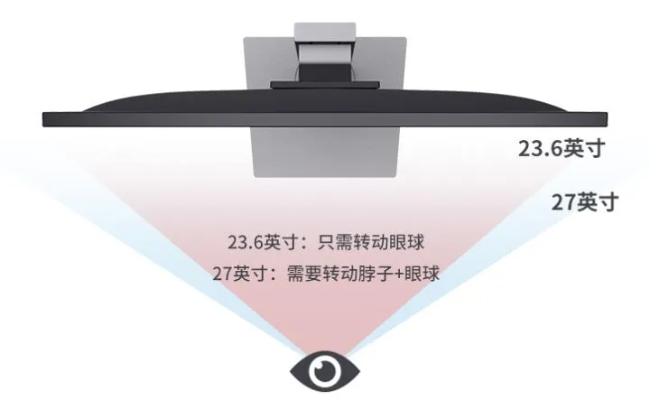
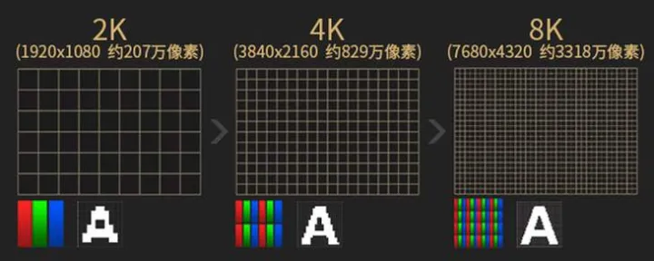
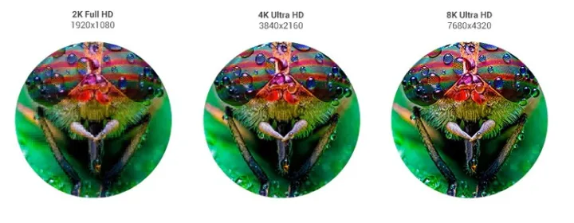
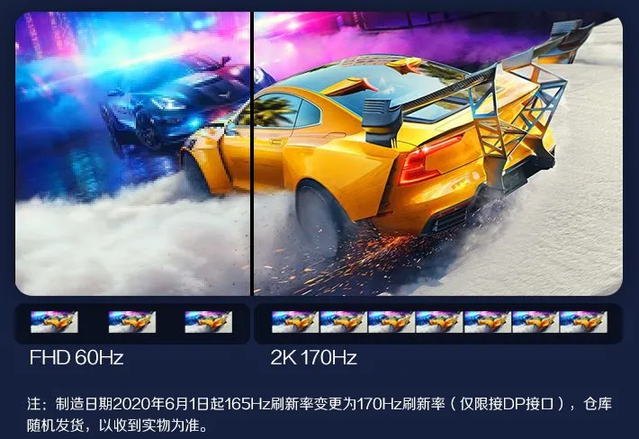
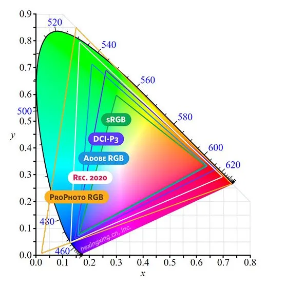
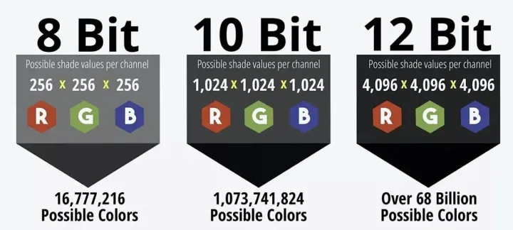
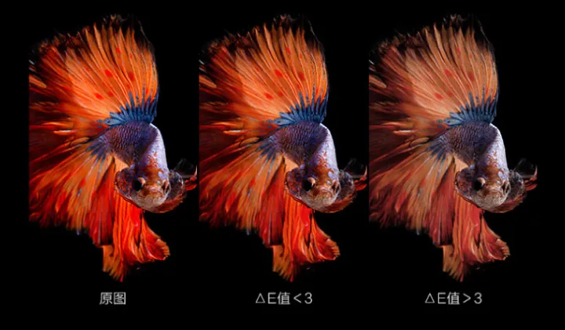
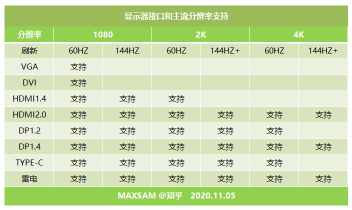
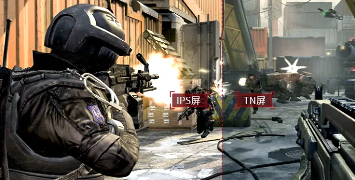
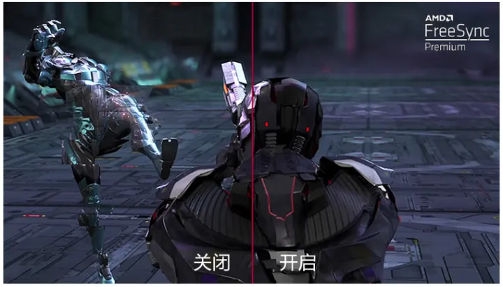

1、尺寸
现在网上卖得多的显示器的尺寸有21.5寸、23.8寸/24寸、24.8寸/25寸、27寸、32寸、宽屏等等。
在相同距离的情况下，屏幕尺寸越大，所需要转动脖子的角度就越大。

目前有很大一部分人群距离显示器都是40cm，在这个距离下24寸只需要转动眼球，而27寸则需要转动脖子和眼球。所以这个距离下一般选择23.8寸、24寸、25寸的显示器比较好。
宗主自己距离显示器一般是80cm到100cm，这个距离来说27寸的感觉就和40cm-24寸的一样，也是最佳体验。
2、分辨率
目前主流的分辨率


- 1080P/FHD：1920*1080
- 2K/QHD：2560*1440
- 4K/UHD：3840*2160
- 8K/UHD：7680*4320
以距离屏幕40cm为基础，屏幕尺寸和分辨率配比比较好的24寸/1080p、27寸/2k、32寸/4k。
以宗主距离屏幕80cm为基础来说，屏幕尺寸和分辨率配比比较好的是24寸/900p、27寸/1080p、32寸/2k。
3、刷新率
刷新率从30Hz到60Hz的时候人眼感觉最为明显，接下来就是60Hz到75Hz的时候比较明显，75Hz到120Hz的时候不太明显，以及120Hz以上人眼基本感觉不出来差别。
所以不是高玩的人建议在60Hz到120Hz这个范围内选择比较好。一般不是经常玩游戏的玩家可以选择75Hz的显示器，不玩游戏的办公人群选择60Hz的显示器。

4、响应时间
这个直接说结论，办公人群选择GTG(灰阶响应时间)可以在2ms-10ms的显示器，FPS游戏人群建议选择GTG(灰阶响应时间)在1ms-2ms的显示器。屏幕一般为Nano/Fast IPS/TN屏。
5、色域
- sRGB：由微软和惠普起草，WINDOWS操作系统和软件常用
- NTSC：电子电视屏幕色彩标准，覆盖100%sRGB约等72%NTSC
- Adobe RGB：覆盖sRGB+CMYK色彩空间，主要是作图设计标准
- DCI-P3：于数字影院的比较新的色彩标准，以人类视觉体验为主
苹果电脑使用的DCI-P3广色域93%
学美术的建议按照苹果电脑显示器的色域标准去选择对应的显示器

6、色深
一般VA面板最高只能到达8bit，而IPS面板可以到达10bit，而有一些显示器厂商，提供了更大的模拟芯片，比如14BIT混色精度，提高色彩准确度，有更好色彩过渡。
目前网上所有在线的显示器基本都是原生8Bit，而那些标10Bit的一般都是8Bit抖10Bit，也就是假的10Bit，那些原生10Bit的显示器都比较贵。

7、色准
Delta E表示色彩的准确度，数值越小，色彩越准确，为满足专业摄影师/图像工作者的严苛要求，一般要求显示器Delta E≤2（平均值），如果Delta E过大，颜色会失真，需要专业校色。显示器不是越浓艳越好，要看跟真实的区别，一般小于3比较正常，好一些小于1.5。

8、显示器接口
- HDMI: 目前最新的规格是HDMI2.1，HDMI 2.1标准已经能够支持4K 120Hz及8K 60Hz，支持高动态范围成像（HDR），可以针对场景或帧数进行优化，向后兼容HDMI 2.0、HDMI 1.4
- DP: 主要有DisplayPort接口和苹果开发的miniDP接口，具备超大的传输带宽，可以支持超高分辨率和30bit的色深，DP1.4支持4K，60-240H是目前显卡支持最广泛的接口
- TYPE-C/雷电：TYPE-C和DP1.2规格差不多，但是苹果强化的雷电接口可以支持5K视频和最多八声道音频同步传输
- VGA：最古老的接口，主要1080P分辨率，理论上可以达到2048x1536，容易受干扰
- DVI：分辨率到2K以上，但是刷新率只有可怜的60hz，色域支持到8bit而已

9、面板
显示屏屏幕比较：
- 色彩、色准：IPS ＞ VA ＞ TN
- 响应时间：TN ＞ IPS ＞ VA
- 可视角度：IPS ＞ VA ＞ TN
- 对比度：VA ＞ IPS ＞ TN
屏幕材质较量：
- TN屏：响应快、游戏电竞的好选择，颜色不准
- VA屏：高对比度，黑色更纯粹（现款质量提高了）
- IPS屏：视角广、色准强 图像工作的首选，漏光普遍

10、同步技术：G-Sync、Free-Sync
目前显示器同步技术主要有2种加一种FreeSyn变种：Adaptive-Sync
- FreeSync（AMD显示器同步技术）
- G-SYNC （Nvidia显示器同步技术）
- Adaptive-Sync（FreeSync/G-SYNC 通用）
- 通过DP接口，N卡也可以支持FreeSyn显示器
